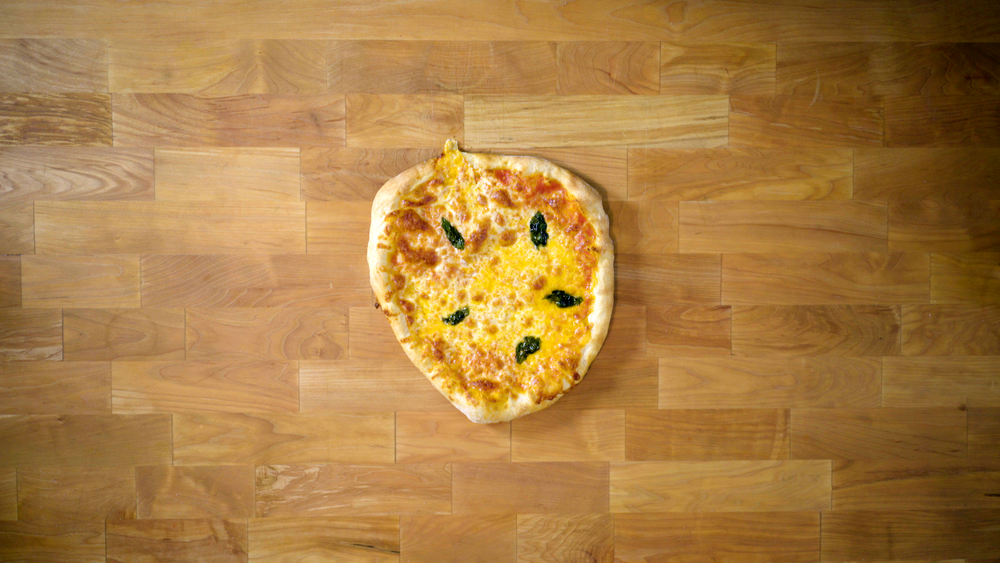

Pizza Dough

The first pizza dough I ever made. Perfect for fun pizza making sessions with friends.
Ingredients
- 500g Bread flour
- 16g kosher salt
- 1g active dry yeast
- 350 ml water
Steps
- In a medium bowl, thoroughly blend the flour, active dry yeast, and salt. Add the water and, with a wooden spoon or your hands, mix thoroughly.
- Cover the bowl with plastic wrap or a kitchen towel and allow it to rise at room temperature for 18 hours or until it has more than doubled. It will take longer in a chilly room and less time in a very warm one.
- Flour a work surface and scrape out the dough. Divide it into 4 equal parts and shape them. For each portion, start with the right side of the dough and pull it towards the center; then do the same with the left, then the top, then the bottom (the order doesn't actually matter; what you want is four folds). Shape each portion into a round and turn seam side down. Mold the dough into a neat circular mound. The mounds should not be sticky; if they are, dust with more flour.
- If you don't intend to use the dough right away, wrap the balls individually in plastic and refrigerate for up to 3 days. Return to room temperature by leaving them out on the counter, covered in a damp cloth, for 2 to 3 hours before needed.